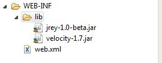
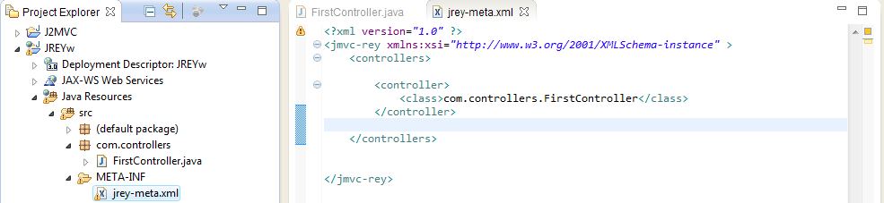
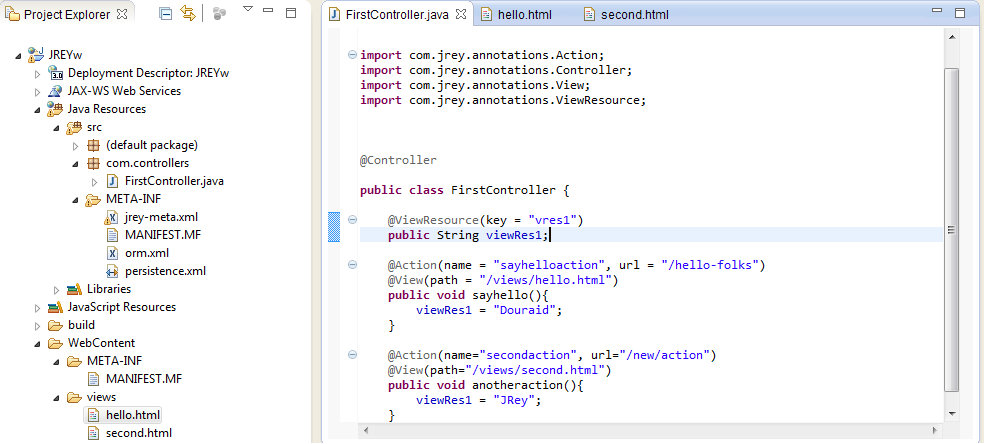
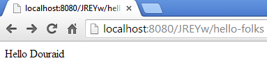
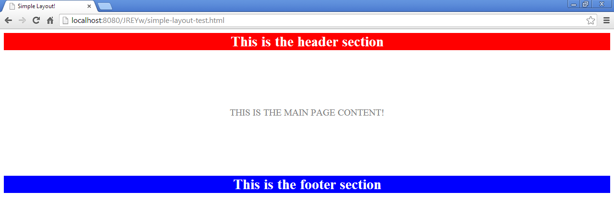

JRey framework: Quick start tutorial
What is JRey?
JRey is a light Java web MVC2 open source framework designed for small and medium projects in need for a concrete MVC2 implementation.
Implementing and using Jrey is pretty easy! No harmful configuration is needed, all the instructions on how to use JRey is included in this single-page documentation
JRey is using Apache Velocity as templating engine! You can find the documentation on how using Apache Velocity by clicking here
Getting started
Before you start your coding, you will need a slight configuration:
Add JRey and Velocity jars to your web project:
The very first thing you need to do is to add the required jars to your project's WEB-INF/lib directory. Assuming that you're using eclipse as IDE, your jars should appear as in the following screenshot:

Tell your application server to forward all the requests to JRey's front controller:
In your web.xml file, add the following lines
<servlet>
<servlet-name>JRey-Main</servlet-name>
<servlet-class>com.jrey.controller.MainController</servlet-class>
</servlet>
<servlet-mapping>
<servlet-name>JRey-Main</servlet-name>
<url-pattern>/*</url-pattern>
</servlet-mapping>
Create your unique JRrey configuration file:
Under your source folder, create a jrey-meta.xml file as demonstrated in the following screenshots
Now you're ready to start using JRey!
Your first controller and view
Creating and declaring a controller
As you may now, the controller in the MVC model stands for an entry point to your application. To create a controller, two things are needed to be done:
- Create a simple java class annotated with @Controller
- Tell JRey about this controller in the jrey-meta.xml file
Assuming that you created a FirstController.java class in the com.controllers package, it should looks like
Now you need to declare this controller inside the <controllers> tag in your jrey-meta.xml file:

Your controller's actions:
A controller's action is sub-level entry point to your application. Each controller may holds one or more actions.
Programatically, an action is a simple method that will be fired once it's called.
Each action should possess its own access URL, which means a unique URL that, once requested, will fire the action!
In Jrey, an action is a simple controller's method annotated with @action,a name and an url arguments is given to the @action annotation. The url argument will be used to access your action from a web browser:
Now let's fire the action using the web browser!
Okay, you've got a blank page, that's normal! Yes, in order to get a content, you need to associate a page to your controller. But how?
Associate a view to your action
In most times, an action is associated to a view (a static or dynamic html file for example) to render some content to the user. It's easy to get it done with JRey! All you have to do is to add the @View annotation to your action.
The @View annotation takes in argument the path parameter which contains the view path.
Basically, you can store your views anywhere under the WebContent directory, which is the default root path for your views.
Assuming that you've created a file called hello.html under a directory called views:
You can associate this view to your action as demonstrated in the following screenshot:
Let's fire the action again and see the result!
Hola! the view content is showing on the browser!
Sending some data to the view
In most cases, you want to send some data from your action to its view. JRey gives you the ability to do it in 2 different ways:
1. Give it what your action returns:
As your action is simply a java class method, it would return something instead of void, right? Then whenever your action returns a Map object (HashMap for example), its content will be transformed to variables that could be used within your view.
To better understand this concept, take a look at the following example:
Now let's edit the view to display the returned variables:

Now let's see the result in the browser!
2. Using the view resources:
View resources are some kind of shared data between all your controller's actions and views. Once declared, a view resource could be initialized or modified within one or more actions, and accessible from any view that is associated to one of these actions.
A view resource is a class attribute that is annotated with @ViewResource. In the following example, we will create a new action and a view resource that will be tested on both actions.

The key argument in the @ViewResource annotation is used to retrieve its value from within a view via the $Request object as demonstrated in the following:
Let's see now what's rendered by each action:


Got it? I hope so.
Using the HTTP Request and Response objects.
Web applications are based on HTTP protocol, and it's a must that you can access, and sometimes alter, the client request and the server's response information.
JRey Framework provides the ability to use these objects by injecting them inside your controller using the @InjectedRequest and the @InjectedResponse annotations as demonstrated in the following example:
The JRey's Request and Response objects contains all the methods contained in the HttpServletRequest and the HttpServletResponse objects, besides some extra methods which are:
For the Request object:
- getViewResource(String key): Retrieves a view resource
- getUrlParameter(String key): Retrieves a parameter* (see the following section) from the requested url
- getCurrentController(): Returns the current controller's name
- getCurrentAction(): Returns the current action's name
- generateUrl(String actionName): Returns the specified action's URL
- generateUrl(String actionName, String[] keys, String[] values): Returns the specified action's url with its parameters (Could be used from within a controller)
- generateUrl(String actionName, Map params): Returns the specified action's url with its parameters (Could be used from within a controller or a view)
For the Response object:
No extra methods for the Response object in this version.
To use the Request and the Response objects from within a view, use simply the global variables $Request and $Response
The HttpSessionObject is accessible from within a view via the global variable $Session
A little bit more with actions
Specify the accepted HTTP method for an action
By default, an action accepts any HTTP method (POST, GET, PUT, DELETE,...etc.). To limit the accepted HTTP methods by your action, it's pretty easy, all you need to do is to specify the accepted Method inside the @Action's annotation method field
The method field accepts a single value from the Action.Method enumeration which contains the following values: GET,POST,PUT,DELETE,HEAD,OPTIONS,TRACE and ANY
The default method value for an action's HTTP method is Method.ANY which means that your action accepts any HTTP method.
Take a look at the following example:
The first action will show a login form (/views/login.html file), the login form's action attribute contains the url to the processLogin action which is generated by the $Request.generateUrl() method.
Once the form is submitted, nothing much will happen, the browser will redirect you back to the loginform action.
Parametrize the action's URL
The HTTP protocol allows to send some parameters through the URL as << pretty >> as http://mywebsite.com/somepage?param1=value1&...
In fact, two major things will lead to you to change the way how your URLs looks like:
- Your website will be easier to surf on when your URLs looks simple and pretty
- Using classical URL parameters would affect your website SEO to make it less visible by Google and its colleagues
You can add one or more parameters to your action's URL, each parameter should be prefixed with ":" and its name should contains alphanumeric characters only (a-z, A-Z and 0-9).
You can retrieve an URL parameter value from whitin your controller's action or its view using the Request.getUrlParameter(String parameterName) method
Now assuming that you have an action that is supposed to show books filtered by category, we will add to the URL the category parameter as in the following example:
Once fired from the browser, the action will return the following response:
JRey and Layouts
In JRey framework, you could apply a layout to one or more views using the @Layout annotation. A layout is typically a simple html file in which you should define some regions.
A region is a location in your layout file which could be overloaded with a view content.
A region is defined using the [region::region-name][region::end] special tag
Apply a layout to a single view
In the following example, we will create a simple layout that we will associate to a simple action's view:
Next, we'll create a simple action on that we'll apply the created Layout using the @Layout annotation:
Finally, let's create the view file (simpleview.html) which will be associated to simpleaction(), and overload the layout's regions content:
Now let's see the action's output on the browser:

Please note that an action's view cannot contain an extra content outside the overloaded layout regions, in this case the outer content will not be included in the output.
Apply a layout to the whole controller
You can apply a layout to all your controller's actions, in this case, all the actions' views will inherit the specified layout.
To do this, all you need to do is to annotate the controller with @Layout instead of the action as demonstrated in the following example:
The @NoLayout annotation
When you apply layout to a controller, all its actions' views will adopt it and should overload its regions, but in some cases you want a simple action within your controller without any layout applied, in this case, annotate it with @NoLayout. Take a look at the following example:
The @NoLayout annotation could also be applied to a controller, this is very useful when you define a default layout in the jrey-meta.xml file (see the next section)
More configuration
Define a global layout to your application
In most cases, when you build a website, you have always a common layout between many actions/controller. You can define a common Layout through the jrey-meta.xml file inside the config tag as you can see in the following screenshot:
Now that you've defined the default layout, it will be automatically applied to all your controllers' actions, unless you use the @Layout annotation to use another, or @NoLayout to remove it from a controller or an action.
Define your views' default path
You may need to place your views and layouts inside a specific directory under the webroot, and for sure you'll want to avoid typing the full path to them each time you use @View or @Layout.
In order to define a default views' path, specify in the jrey-meta.xml file, inside the config tag as shown in the following screenshot:
Once you defined the views' root path, you will have to put all your views and layouts under the specified directory, or its descendants
More with controllers
PreExecute methods
Sometimes you would like to execute some code before any action in your controller is fired. To do this the JRey's way, you would implement a simple method (one or more) and annotate it with @PreExecute, once done, this/these method(s) will be fired before the requested action is executed.
Take a look at the following example to better understand this concept:
In this example, the checkUserAuthentication() method is called before any action.